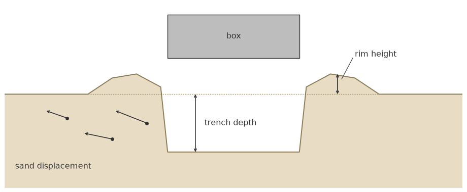
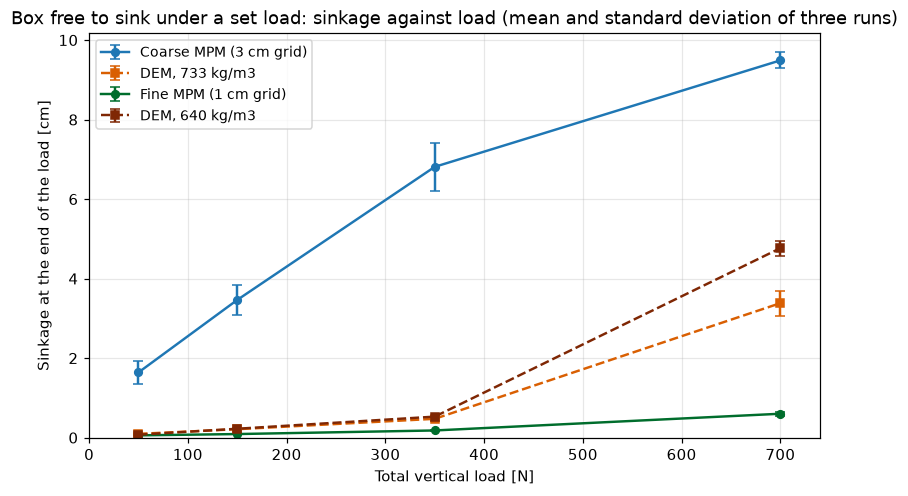
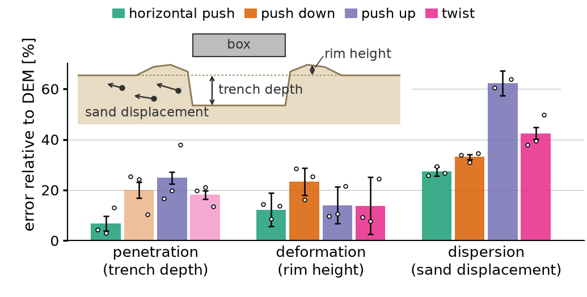

The same box is moved through the same sand in MPM and in DEM, and the two are compared in what the sand does and in the force on the box.
Preset poppy_seed_loose (loosely packed poppy seed), implicit MPM in Newton.
| Parameter | Value |
|---|---|
| Bulk density as generated | 640 kg/m3 |
| Bulk density after settling | fine MPM 640 kg/m3; coarse MPM 717 to 734 kg/m3 (it compacts) |
| Internal friction coefficient | 0.73 (36.1 degrees) |
| Young's modulus | 1e15 Pa (effectively rigid) |
| Poisson ratio | 0.3 (default of the material class; the preset does not set it) |
| Cohesion: yield stress, tensile yield ratio | 0 Pa, 0 (none) |
| Yield pressure | 1e15 Pa (no compaction by the material law) |
| Dilatancy, hardening, viscosity | 0, 0, 0 Pa s |
| Sliding angle in a tilt test | fine MPM 40 degrees; coarse MPM 32.5 degrees, with creep from 20 degrees |
| Fine MPM | 1 cm grid, 8 particles per cell; 1.67 ms, 250 iterations |
| Coarse MPM | 3 cm grid, about 2 particles per cell; 5 ms, 25 iterations |
Chrono DEM-Engine; calibrated to the MPM sand: three-sphere clumps whose bulk density and sliding angle match the settled coarse MPM sand.
| Parameter | Value |
|---|---|
| Grain shape | clump of 3 overlapping spheres on a triangle |
| Grain size | 15 mm volume-equivalent diameter; sphere radius 5.4 to 6.6 mm in 5 sizes |
| Two bed densities | 733 kg/m3 to match the coarse MPM bed, 640 kg/m3 to match the fine MPM bed |
| Grain solid density | 1196 kg/m3 (733 bed), 1041 kg/m3 (640 bed) |
| Bulk density measured, solid fraction | 736 and 639 kg/m3; 0.62 |
| Grain-to-grain friction coefficient | 0.5 |
| Rolling resistance | 0 (off) |
| Sliding angle in a tilt test | 32.5 degrees (at 733 kg/m3) |
| Restitution | 0.2 |
| Young's modulus, Poisson ratio | 5e7 Pa, 0.3 |
| Contact model | Hertz-Mindlin with Coulomb friction |
| Time step | 21.5 microseconds (733 bed), 20.2 (640 bed) |
| Grains in the push bed | 110,112 (733 bed), 127,317 (640 bed) |
Both: box-to-sand friction 1 (DEM 1), floor and wall friction 0.8 (DEM 0.8); box 0.2 x 0.2 x 0.1 m; bed 2 x 0.8 m for the push and 1 x 1 m for the other motions, 0.25 m deep as generated; three beds in MPM and three seeds in DEM for every case.
Each clip: fine MPM above, DEM below, real time, sand coloured by speed.
The box is lowered 6 cm into the sand and pushed 1 m at 0.5 m/s.
The box is pressed 6 cm into the sand at 0.2 m/s and held.
The box is lifted out of the sand at 0.2 m/s.
The box, 6 cm deep, turns 90 degrees about the vertical axis; both panels are seen from above.
The box is free to sink under a load of 350 N.
Sand within 3 cm of the centre plane (twist: the top 3 cm), box in red; every clip on the same 640 x 720 canvas. One run each. Originals: ~/isaac/dem_compare/results/video/.
Every error is the difference between MPM and DEM divided by the DEM value.

| Metric | What it is |
|---|---|
| Penetration (trench depth) | Depth of the trench or pit the box leaves. |
| Deformation (rim height) | Height of the sand piled up beside the trench or pit. |
| Dispersion (sand displacement) | How far and where the sand has moved, by 4 cm block of the bed. |
| Force | Force of the sand on the box (push: horizontal; push down: vertical peak). |
| Sinkage (fixed-weight press) | How deep the free box settles under a set load. |
Definitions: outputs/T8.md, sections P7 and P8.
MPM above, DEM below.
MPM above, DEM below.
| Metric | Fine MPM | DEM | Error | Coarse MPM | DEM | Error |
|---|---|---|---|---|---|---|
| Penetration (trench depth) | 6.0 cm | 6.2 cm | 4% | 8.3 cm | 6.3 cm | 32% |
| Deformation (rim height) | 2.32 cm | 2.06 cm | 14% | -0.26 cm | 2.25 cm | 111% |
| Dispersion (sand displacement, RMS of the moving sand) | 16.8 cm | 15.8 cm | 26% | 14.5 cm | 13.5 cm | 47% |
| Force (horizontal, mean over 0.5 to 1.0 m) | 97 N | 71 N | +37% | 88 N | 79 N | +11% |
The case of the clips; mean of three beds or seeds; errors over the 9 pairs. Source: outputs/T8.md, section P7.
Fine MPM reproduces the trench and the rim within 4% and 14%; coarse MPM digs 8.3 cm and builds no rim.
MPM above, DEM below.
MPM above, DEM below.
| Metric | Fine MPM | DEM | Error | Coarse MPM | DEM | Error |
|---|---|---|---|---|---|---|
| Penetration (mean depth of the depressed area) unchecked | 5.9 cm | 4.7 cm | 25% | 3.8 cm | 4.9 cm | 21% |
| Deformation (rim height) | 0.78 cm | 1.09 cm | 28% | -0.07 cm | 1.15 cm | 107% |
| Dispersion (sand displacement, RMS of the moving sand) | 1.4 cm | 1.7 cm | 34% | 1.2 cm | 1.7 cm | 70% |
| Force (vertical peak while pressing) | 2089 N | 922 N | +127% | 461 N | 1062 N | -57% |
The case of the clips; mean of three beds or seeds; errors over the 9 pairs. Source: outputs/T8.md, section P7.
The sand resists the fine MPM box with 2.3 times the DEM force and the coarse MPM box with 0.4 times; coarse MPM builds no rim.
MPM above, DEM below.
MPM above, DEM below.
| Metric | Fine MPM | DEM | Error | Coarse MPM | DEM | Error |
|---|---|---|---|---|---|---|
| Penetration (trench depth) | 3.9 cm | 4.6 cm | 17% | 4.6 cm | 4.6 cm | 5% |
| Deformation (rim height) | 0.79 cm | 0.72 cm | 10% | -0.09 cm | 0.76 cm | 111% |
| Dispersion (sand displacement, RMS of the moving sand) | 0.6 cm | 1.3 cm | 61% | 0.3 cm | 1.2 cm | 91% |
The case of the clips; mean of three beds or seeds; errors over the 9 pairs. Source: outputs/T8.md, section P7.
The pit left behind is 3.9 cm deep in fine MPM and 4.6 cm in DEM, and the MPM sand moves about half as far during the lift.
MPM above, DEM below.
MPM above, DEM below.
| Metric | Fine MPM | DEM | Error | Coarse MPM | DEM | Error |
|---|---|---|---|---|---|---|
| Penetration (mean depth of the depressed area) unchecked | 5.4 cm | 4.5 cm | 20% | 2.8 cm | 4.6 cm | 39% |
| Deformation (rim height) | 0.87 cm | 0.96 cm | 9% | -0.12 cm | 0.92 cm | 113% |
| Dispersion (sand displacement, RMS of the moving sand) | 2.1 cm | 2.2 cm | 38% | 1.9 cm | 2.0 cm | 68% |
The case of the clips; mean of three beds or seeds; errors over the 9 pairs. Source: outputs/T8.md, section P7.
Fine MPM piles more sand at the corners of the turning box (1.25 against 1.01 cm right beside it); one cell further out the rim agrees.
MPM above, DEM below; 350 N.
MPM above, DEM below; 350 N.

| Total load | Fine MPM | DEM | MPM / DEM | Coarse MPM | DEM | MPM / DEM |
|---|---|---|---|---|---|---|
| 50 N | 0.06 cm | 0.07 cm | 0.80 | 1.64 cm | 0.10 cm | 17.5 |
| 150 N | 0.09 cm | 0.22 cm | 0.40 | 3.46 cm | 0.21 cm | 16.8 |
| 350 N | 0.18 cm | 0.53 cm | 0.34 | 6.81 cm | 0.47 cm | 14.5 |
| 700 N | 0.60 cm | 4.77 cm | 0.13 | 9.49 cm | 3.38 cm | 2.8 |
Sinkage after 2 s under load; mean of three beds or seeds. Source: outputs/T8.md, section P8.
In coarse MPM the box sinks 14 times deeper than in DEM at 350 N because the sand compacts; fine MPM holds 700 N where DEM gives way.
Fine MPM is within 7% to 25% of DEM in trench depth and 12% to 23% in rim height; the sand displacement differs by 27% to 62%; coarse MPM is further off in displacement and builds no rim.

| Error against DEM, all cases of a motion | Penetration: fine MPM | coarse MPM | Rim height: fine MPM | coarse MPM | Displacement: fine MPM | coarse MPM | Force: fine MPM | coarse MPM |
|---|---|---|---|---|---|---|---|---|
| Horizontal push | 7% | 28% | 12% | 112% | 27% | 44% | 1.32 to 1.42 x DEM | 1.04 to 1.11 x DEM |
| Push down | 20% * | 13% * | 23% | 107% | 33% | 67% | 2.05 to 2.27 x DEM | 0.32 to 0.43 x DEM |
| Push up | 25% | 11% | 14% | 111% | 62% | 92% | not compared | not compared |
| Twist | 18% * | 32% * | 14% | 111% | 42% | 69% | not compared | not compared |
* Box depth prescribed; this number mostly reports the box position unchecked. Push up displacement from the two 6 cm cases. The rest checked, with caveats. Source: outputs/T8.md, section P7.
No discretization tested is both affordable for training and accurate: sparse sampling makes the sand compact, dense sampling on a coarse grid makes it about twice too strong, and the force is not converged even at 1 cm.
| MPM discretization | Sinkage of the free box at 350 N (DEM 0.5 cm) | Push force | Cost | Status |
|---|---|---|---|---|
| Coarse MPM (3 cm grid, about 2 particles per cell) | 6.8 cm | 1.11 x DEM (a cancellation) | 1 | checked, with caveats |
| Coarse grid, dense sampling (3 cm, 8 particles per cell) | 1.1 cm | 1.69 to 1.93 x DEM | 3.9 x the particles; about 3 x the step time with 16 to 64 environments | sinkage and force checked, with caveats; cost with many environments unchecked |
| Fine MPM (1 cm grid, 8 particles per cell) | 0.2 cm | 1.37 x DEM | about 100 x the particles | checked, with caveats |
Source: outputs/T8.md, sections P6, P8 and P9.